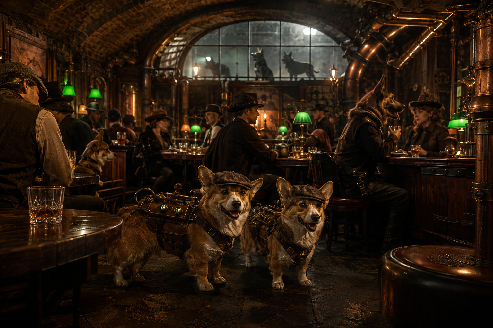
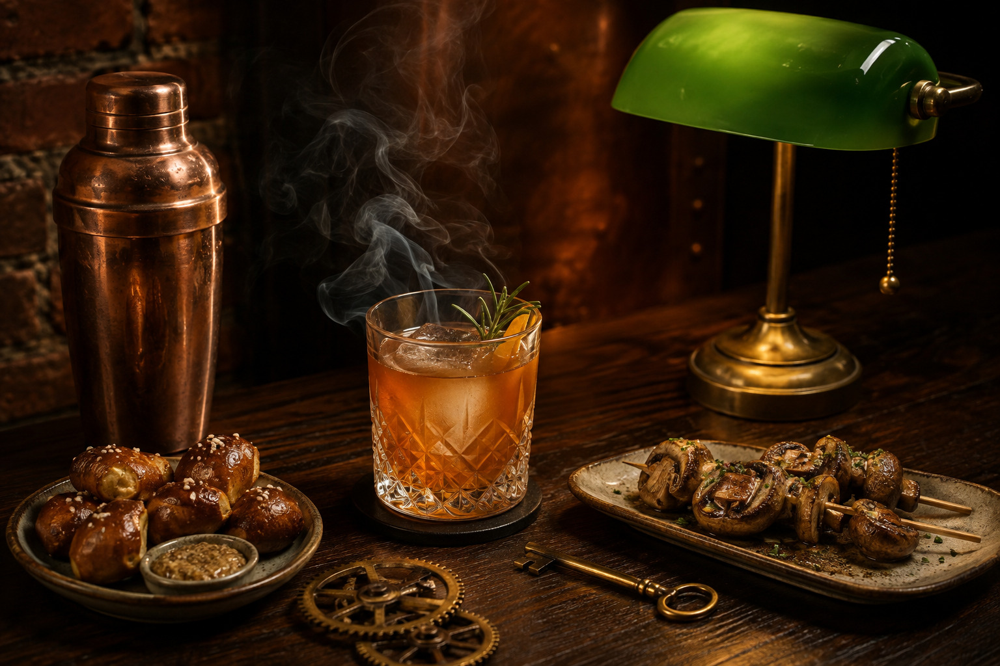

Made, Not Issued
Every shared plate and house tonic is prepared to order instead of pulled from an official ration line.
The unmarked door below Gearford
A hidden corgi supper club serving real choices beneath the bulldog regime's ration halls.
Look for the green lamp behind the old boiler shop.

Back Room 07 · Lower Gearford
Why we stay below
Above us, bulldog officials decide what every district is allowed to eat. Down here, the kitchen still belongs to the cooks and the table still belongs to the guests.
Every shared plate and house tonic is prepared to order instead of pulled from an official ration line.
Corgis, humans, and trusted travelers gather together without assigned sections.
Our rotating cellar rooms keep each neighborhood fed and one step ahead of inspection.

House favorite
Charred chicken skewers, warm pretzel bites, smoked mushrooms, sharp mustard, house pickles, and two chilled tea tonics.
$18 Served until the lantern goes dark.
See the full menu